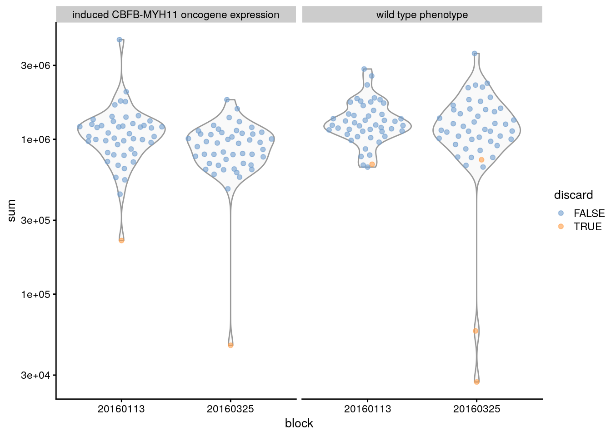
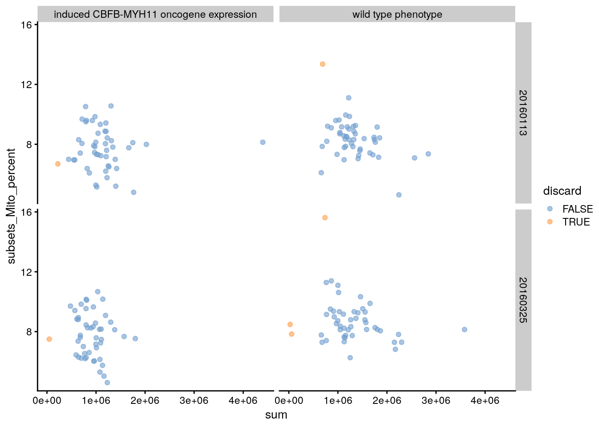
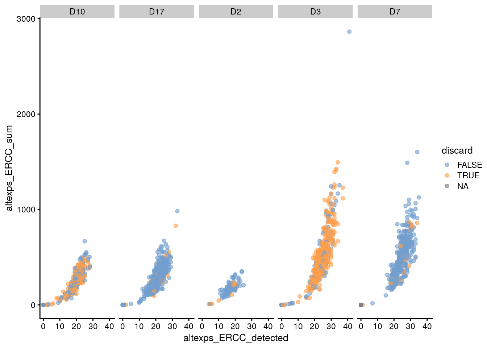

5 Control de calidad
Instructor: Leonardo Collado Torres
## Paquetes de este capítulo
library("scRNAseq") ## para descargar datos de ejemplo
library("AnnotationHub") ## para obtener información de genes
library("scater") ## para gráficas y control de calidad
library("BiocFileCache") ## para descargar datos
library('DropletUtils') ## para detectar droplets
library('Matrix') ## para leer datos en formatos comprimidos5.1 Diapositivas de Peter Hickey
Ve las diapositivas aquí
5.2 Ejercicio: entendiendo addPerCellQC
## Datos
library('scRNAseq')
sce.416b <- LunSpikeInData(which = "416b")## snapshotDate(): 2021-05-18## see ?scRNAseq and browseVignettes('scRNAseq') for documentation## downloading 1 resources## retrieving 1 resource## loading from cache## see ?scRNAseq and browseVignettes('scRNAseq') for documentation## downloading 1 resources## retrieving 1 resource## loading from cache## see ?scRNAseq and browseVignettes('scRNAseq') for documentation## downloading 1 resources## retrieving 1 resource## loading from cache## snapshotDate(): 2021-05-18## see ?scRNAseq and browseVignettes('scRNAseq') for documentation## downloading 1 resources## retrieving 1 resource## loading from cache## snapshotDate(): 2021-05-18## downloading 1 resources## retrieving 1 resource## loading from cache## require("ensembldb")sce.416b$block <- factor(sce.416b$block)
# Descarga los archivos de anotación de la base de datos de Ensembl
# correspondientes usando los recursos disponibles vía AnnotationHub
library('AnnotationHub')
ah <- AnnotationHub()## snapshotDate(): 2021-05-18query(ah, c("Mus musculus", "Ensembl", "v97"))## AnnotationHub with 1 record
## # snapshotDate(): 2021-05-18
## # names(): AH73905
## # $dataprovider: Ensembl
## # $species: Mus musculus
## # $rdataclass: EnsDb
## # $rdatadateadded: 2019-05-02
## # $title: Ensembl 97 EnsDb for Mus musculus
## # $description: Gene and protein annotations for Mus musculus based on Ensem...
## # $taxonomyid: 10090
## # $genome: GRCm38
## # $sourcetype: ensembl
## # $sourceurl: http://www.ensembl.org
## # $sourcesize: NA
## # $tags: c("97", "AHEnsDbs", "Annotation", "EnsDb", "Ensembl", "Gene",
## # "Protein", "Transcript")
## # retrieve record with 'object[["AH73905"]]'# Obtén la posición del cromosoma para cada gen
ens.mm.v97 <- ah[["AH73905"]]## loading from cachelocation <- mapIds(
ens.mm.v97,
keys = rownames(sce.416b),
keytype = "GENEID",
column = "SEQNAME"
)## Warning: Unable to map 563 of 46604 requested IDs.# Identifica los genes mitocondriales
is.mito <- which(location == "MT")
library('scater')
sce.416b <- addPerCellQC(sce.416b,
subsets = list(Mito = is.mito))
## Si quieres guarda los resultados de addPerCellQC() para responder
## las preguntas del ejercicio. Eventualmente si necesitaremos los
## resultados de addPerCellQC() para las secciones posteriores a este
## ejercicio.5.3 Gráficas sobre medidas de control de calidad (QC)
plotColData(sce.416b, x = "block", y = "detected")
plotColData(sce.416b, x = "block", y = "detected") +
scale_y_log10()
plotColData(sce.416b,
x = "block",
y = "detected",
other_fields = "phenotype") +
scale_y_log10() +
facet_wrap( ~ phenotype)
5.3.1 Ejercicio: gráficas QC ERCC
Adapta el código de las gráficas anteriores para otra variable de control de calidad. Por ejemplo, escribe el código para reproducir las siguientes gráficas.


- Basado en las gráficas encuentra la variable de
colData(sce.416b)que contiene la información que queremos gráficar. - ¡No hay que reemplazar todo lo que diga
phenotype - Tengo cuidado con las transformaciones de valores en el eje Y. No aplican para todo tipo de datos.
5.4 Eliminar células de baja calidad
# Valores de límite ejemplo
qc.lib <- sce.416b$sum < 100000
qc.nexprs <- sce.416b$detected < 5000
qc.spike <- sce.416b$altexps_ERCC_percent > 10
qc.mito <- sce.416b$subsets_Mito_percent > 10
discard <- qc.lib | qc.nexprs | qc.spike | qc.mito
# Obtenemos un resumen del número de células
# eliminadas por cada filtro
DataFrame(
LibSize = sum(qc.lib),
NExprs = sum(qc.nexprs),
SpikeProp = sum(qc.spike),
MitoProp = sum(qc.mito),
Total = sum(discard)
)## DataFrame with 1 row and 5 columns
## LibSize NExprs SpikeProp MitoProp Total
## <integer> <integer> <integer> <integer> <integer>
## 1 3 0 19 14 33## Usando isOutlier() para determinar los valores de corte
qc.lib2 <- isOutlier(sce.416b$sum, log = TRUE, type = "lower")
qc.nexprs2 <- isOutlier(sce.416b$detected, log = TRUE,
type = "lower")
qc.spike2 <- isOutlier(sce.416b$altexps_ERCC_percent,
type = "higher")
qc.mito2 <- isOutlier(sce.416b$subsets_Mito_percent,
type = "higher")
discard2 <- qc.lib2 | qc.nexprs2 | qc.spike2 | qc.mito2
# Extraemos los límites de valores (thresholds)
attr(qc.lib2, "thresholds")## lower higher
## 434082.9 Infattr(qc.nexprs2, "thresholds")## lower higher
## 5231.468 Inf# Obtenemos un resumen del número de células
# eliminadas por cada filtro
DataFrame(
LibSize = sum(qc.lib2),
NExprs = sum(qc.nexprs2),
SpikeProp = sum(qc.spike2),
MitoProp = sum(qc.mito2),
Total = sum(discard2)
)## DataFrame with 1 row and 5 columns
## LibSize NExprs SpikeProp MitoProp Total
## <integer> <integer> <integer> <integer> <integer>
## 1 4 0 1 2 6## Más pruebas
plotColData(sce.416b,
x = "block",
y = "detected",
other_fields = "phenotype") +
scale_y_log10() +
facet_wrap( ~ phenotype)
## Determino el bloque (batch) de muestras
batch <- paste0(sce.416b$phenotype, "-", sce.416b$block)
## Versión de isOutlier() que toma en cuenta los bloques de muestras
qc.lib3 <- isOutlier(sce.416b$sum,
log = TRUE,
type = "lower",
batch = batch)
qc.nexprs3 <- isOutlier(sce.416b$detected,
log = TRUE,
type = "lower",
batch = batch)
qc.spike3 <- isOutlier(sce.416b$altexps_ERCC_percent,
type = "higher",
batch = batch)
qc.mito3 <- isOutlier(sce.416b$subsets_Mito_percent,
type = "higher",
batch = batch)
discard3 <- qc.lib3 | qc.nexprs3 | qc.spike3 | qc.mito3
# Extraemos los límites de valores (thresholds)
attr(qc.lib3, "thresholds")## induced CBFB-MYH11 oncogene expression-20160113
## lower 461073.1
## higher Inf
## induced CBFB-MYH11 oncogene expression-20160325
## lower 399133.7
## higher Inf
## wild type phenotype-20160113 wild type phenotype-20160325
## lower 599794.9 370316.5
## higher Inf Infattr(qc.nexprs3, "thresholds")## induced CBFB-MYH11 oncogene expression-20160113
## lower 5399.24
## higher Inf
## induced CBFB-MYH11 oncogene expression-20160325
## lower 6519.74
## higher Inf
## wild type phenotype-20160113 wild type phenotype-20160325
## lower 7215.887 7586.402
## higher Inf Inf# Obtenemos un resumen del número de células
# eliminadas por cada filtro
DataFrame(
LibSize = sum(qc.lib3),
NExprs = sum(qc.nexprs3),
SpikeProp = sum(qc.spike3),
MitoProp = sum(qc.mito3),
Total = sum(discard3)
)## DataFrame with 1 row and 5 columns
## LibSize NExprs SpikeProp MitoProp Total
## <integer> <integer> <integer> <integer> <integer>
## 1 5 4 6 2 95.5 Ejercicio: filtrado de células
5.6 Datos de Grun et al
¿Qué patrón revela esta gráfica?
sce.grun <- GrunPancreasData()## snapshotDate(): 2021-05-18## see ?scRNAseq and browseVignettes('scRNAseq') for documentation## downloading 1 resources## retrieving 1 resource## loading from cache## snapshotDate(): 2021-05-18## see ?scRNAseq and browseVignettes('scRNAseq') for documentation## loading from cachesce.grun <- addPerCellQC(sce.grun)
## ¿Qué patrón revela esta gráfica?
plotColData(sce.grun, x = "donor", y = "altexps_ERCC_percent")## Warning: Removed 10 rows containing non-finite values (stat_ydensity).## Warning: Removed 10 rows containing missing values (position_quasirandom).
¿Cúal de las siguientes gráficas identifica mejor las células de baja calidad?
## isOutlier() puede ayudarnos cuando un grupo de muestras
## tuvo más problemas que el resto
discard.ercc <- isOutlier(sce.grun$altexps_ERCC_percent,
type = "higher",
batch = sce.grun$donor)## Warning in .get_med_and_mad(metric, batch = batch, subset = subset,
## share.medians = share.medians, : missing values ignored during outlier detectiondiscard.ercc2 <- isOutlier(
sce.grun$altexps_ERCC_percent,
type = "higher",
batch = sce.grun$donor,
subset = sce.grun$donor %in% c("D17", "D2", "D7")
)## Warning in .get_med_and_mad(metric, batch = batch, subset = subset,
## share.medians = share.medians, : missing values ignored during outlier detection## isOutlier() tomando en cuenta el batch
plotColData(
sce.grun,
x = "donor",
y = "altexps_ERCC_percent",
colour_by = data.frame(discard = discard.ercc)
)## Warning: Removed 10 rows containing non-finite values (stat_ydensity).## Warning: Removed 10 rows containing missing values (position_quasirandom).
## isOutlier() tomando en cuenta batch y muestras que fallaron
plotColData(
sce.grun,
x = "donor",
y = "altexps_ERCC_percent",
colour_by = data.frame(discard = discard.ercc2)
)## Warning: Removed 10 rows containing non-finite values (stat_ydensity).
## Warning: Removed 10 rows containing missing values (position_quasirandom).
5.7 Gráficas de QC extra
Otras gráficas que podemos hacer.
# Agregamos información sobre que células
# tienen valores extremos
sce.416b$discard <- discard2
# Haz esta gráfica para cada medida de
# control de calidad (QC)
plotColData(
sce.416b,
x = "block",
y = "sum",
colour_by = "discard",
other_fields = "phenotype"
) +
facet_wrap( ~ phenotype) +
scale_y_log10()
# Otra gráfica de diagnóstico útil
plotColData(
sce.416b,
x = "sum",
y = "subsets_Mito_percent",
colour_by = "discard",
other_fields = c("block", "phenotype")
) +
facet_grid(block ~ phenotype)
5.8 Ejercicio: ERCC Grun et al
Adapta el código de sce.416b para los datos de Grun et al y reproduce la imagen siguiente.

- Fíjate en que variables de
colData()estamos graficando. - ¿Existe la variable
discardencolData()? - ¿Qué variable tiene valores de D10, D17, D2, D3 y D7?
5.9 Identificando droplets con datos de PBMC
## Descarguemos los datos
library('BiocFileCache')
bfc <- BiocFileCache()
raw.path <-
bfcrpath(
bfc,
file.path(
"http://cf.10xgenomics.com/samples",
"cell-exp/2.1.0/pbmc4k/pbmc4k_raw_gene_bc_matrices.tar.gz"
)
)## adding rname 'http://cf.10xgenomics.com/samples/cell-exp/2.1.0/pbmc4k/pbmc4k_raw_gene_bc_matrices.tar.gz'untar(raw.path, exdir = file.path(tempdir(), "pbmc4k"))
## Leamos los datos en R
library('DropletUtils')
library('Matrix')
fname <- file.path(tempdir(), "pbmc4k/raw_gene_bc_matrices/GRCh38")
sce.pbmc <- read10xCounts(fname, col.names = TRUE)
bcrank <- barcodeRanks(counts(sce.pbmc))
# Mostremos solo los puntos únicos para acelerar
# el proceso de hacer esta gráfica
uniq <- !duplicated(bcrank$rank)
plot(
bcrank$rank[uniq],
bcrank$total[uniq],
log = "xy",
xlab = "Rank",
ylab = "Total UMI count",
cex.lab = 1.2
)## Warning in xy.coords(x, y, xlabel, ylabel, log): 1 y value <= 0 omitted from
## logarithmic plotabline(h = metadata(bcrank)$inflection,
col = "darkgreen",
lty = 2)
abline(h = metadata(bcrank)$knee,
col = "dodgerblue",
lty = 2)
legend(
"bottomleft",
legend = c("Inflection", "Knee"),
col = c("darkgreen", "dodgerblue"),
lty = 2,
cex = 1.2
) Encontremos los droplets usando
Encontremos los droplets usando emptyDrops().
## Usemos DropletUtils para encontrar los droplets
set.seed(100)
e.out <- emptyDrops(counts(sce.pbmc))
# Revisa ?emptyDrops para una explicación de porque hay valores NA
summary(e.out$FDR <= 0.001)## Mode FALSE TRUE NA's
## logical 989 4300 731991set.seed(100)
limit <- 100
all.out <-
emptyDrops(counts(sce.pbmc), lower = limit, test.ambient = TRUE)
# Idealmente, este histograma debería verse uniforme.
# Picos grandes cerca de cero indican que los _barcodes_
# con un número total de cuentas menor a "lower" no son
# de origen ambiental.
hist(all.out$PValue[all.out$Total <= limit &
all.out$Total > 0],
xlab = "P-value",
main = "",
col = "grey80")
5.10 Ejercicio: detección de droplets
5.11 Filtrado de expresión mitocondrial adicional
Después de filtar los droplets, el filtrado por expresión mitocondrial nos va a ayudar a eliminar células de baja calidad.
sce.pbmc <- sce.pbmc[, which(e.out$FDR <= 0.001)]
is.mito <- grep("^MT-", rowData(sce.pbmc)$Symbol)
sce.pmbc <- addPerCellQC(sce.pbmc, subsets = list(MT = is.mito))
discard.mito <-
isOutlier(sce.pmbc$subsets_MT_percent, type = "higher")
plot(
sce.pmbc$sum,
sce.pmbc$subsets_MT_percent,
log = "x",
xlab = "Total count",
ylab = "Mitochondrial %"
)
abline(h = attr(discard.mito, "thresholds")["higher"], col = "red")
5.12 Ejercicio avanzado
Volvamos a crear sce.pbmc para poder usar plotColData() y visualizar la relación entre total y los niveles de expresión mitocondrial (en porcentaje) separando lo que pensamos que son droplets y las células de acuerdo a los resultados que ya calculamos de emptyDrops(). El resultado final se verá como en la siguiente imagen.

- No podemos usar nuestro objeto
sce.pbmcporque ya eliminamos los droplets al corrersce.pbmc <- sce.pbmc[, which(e.out$FDR <= 0.001)]. Por eso tendremos que volver a usarsce.pbmc <- read10xCounts(fname, col.names = TRUE). - Una vez que hayamos vuelto a hacer
sce.pbmc, tenemos que guardar en ese objeto los resultados deemptyDrops(). Por ejemplo, consce.pbmc$is_cell <- e.out$FDR <= 0.001. - Como
e.out$FDRtiene muchosNA, nos conviene filtrar esos datos. - Tendremos que volver a correr
addPerCellQC()y guardar los resultados en nuestro objetosce.pbmc. - Al final usaremos
plotColData()junto confacet_grid(~ sce.pbmc$is_cell).
5.13 Discusión ¿Conviene eliminar datos?
# Eliminemos las células de calidad baja
# al quedarnos con las columnas del objeto sce que NO
# queremos descartar (eso hace el !)
filtered <- sce.416b[,!discard2]
# Alternativamente, podemos marcar
# las células de baja calidad
marked <- sce.416b
marked$discard <- discard25.13.1 Un nuevo paquete: ExperimentSubset
En BioC2021 presentaron ExperimentSubset que provee otro camino para resolver este dilema.
.](img/ExperimentSubset.png)
Descripción gráfica de ExperimentSubset. Fuente: vignette ExperimentSubset.
5.14 Detalles de la sesión de R
## Información de la sesión de R
Sys.time()## [1] "2021-08-08 19:50:16 UTC"proc.time()## user system elapsed
## 221.538 5.581 259.684options(width = 120)
sessioninfo::session_info()## ─ Session info ───────────────────────────────────────────────────────────────────────────────────────────────────────
## setting value
## version R version 4.1.0 (2021-05-18)
## os Ubuntu 20.04.2 LTS
## system x86_64, linux-gnu
## ui X11
## language (EN)
## collate en_US.UTF-8
## ctype en_US.UTF-8
## tz UTC
## date 2021-08-08
##
## ─ Packages ───────────────────────────────────────────────────────────────────────────────────────────────────────────
## package * version date lib source
## AnnotationDbi * 1.54.1 2021-06-08 [1] Bioconductor
## AnnotationFilter * 1.16.0 2021-05-19 [1] Bioconductor
## AnnotationHub * 3.0.1 2021-06-20 [1] Bioconductor
## assertthat 0.2.1 2019-03-21 [1] RSPM (R 4.1.0)
## beachmat 2.8.0 2021-05-19 [1] Bioconductor
## beeswarm 0.4.0 2021-06-01 [1] RSPM (R 4.1.0)
## Biobase * 2.52.0 2021-05-19 [1] Bioconductor
## BiocFileCache * 2.0.0 2021-05-19 [1] Bioconductor
## BiocGenerics * 0.38.0 2021-05-19 [1] Bioconductor
## BiocIO 1.2.0 2021-05-19 [1] Bioconductor
## BiocManager 1.30.16 2021-06-15 [1] RSPM (R 4.1.0)
## BiocNeighbors 1.10.0 2021-05-19 [1] Bioconductor
## BiocParallel 1.26.1 2021-07-04 [1] Bioconductor
## BiocSingular 1.8.1 2021-06-08 [1] Bioconductor
## BiocVersion 3.13.1 2021-03-19 [2] Bioconductor
## biomaRt 2.48.2 2021-07-01 [1] Bioconductor
## Biostrings 2.60.2 2021-08-05 [1] Bioconductor
## bit 4.0.4 2020-08-04 [1] RSPM (R 4.1.0)
## bit64 4.0.5 2020-08-30 [1] RSPM (R 4.1.0)
## bitops 1.0-7 2021-04-24 [1] RSPM (R 4.1.0)
## blob 1.2.2 2021-07-23 [1] RSPM (R 4.1.0)
## bookdown 0.22 2021-04-22 [1] RSPM (R 4.1.0)
## bslib 0.2.5.1 2021-05-18 [1] RSPM (R 4.1.0)
## cachem 1.0.5 2021-05-15 [2] RSPM (R 4.1.0)
## cli 3.0.1 2021-07-17 [2] RSPM (R 4.1.0)
## colorspace 2.0-2 2021-06-24 [1] RSPM (R 4.1.0)
## cowplot 1.1.1 2020-12-30 [1] RSPM (R 4.1.0)
## crayon 1.4.1 2021-02-08 [2] RSPM (R 4.1.0)
## curl 4.3.2 2021-06-23 [2] RSPM (R 4.1.0)
## DBI 1.1.1 2021-01-15 [1] RSPM (R 4.1.0)
## dbplyr * 2.1.1 2021-04-06 [1] RSPM (R 4.1.0)
## DelayedArray 0.18.0 2021-05-19 [1] Bioconductor
## DelayedMatrixStats 1.14.1 2021-08-05 [1] Bioconductor
## digest 0.6.27 2020-10-24 [2] RSPM (R 4.1.0)
## dplyr 1.0.7 2021-06-18 [1] RSPM (R 4.1.0)
## dqrng 0.3.0 2021-05-01 [1] RSPM (R 4.1.0)
## DropletUtils * 1.12.2 2021-07-22 [1] Bioconductor
## edgeR 3.34.0 2021-05-19 [1] Bioconductor
## ellipsis 0.3.2 2021-04-29 [2] RSPM (R 4.1.0)
## ensembldb * 2.16.4 2021-08-05 [1] Bioconductor
## evaluate 0.14 2019-05-28 [2] RSPM (R 4.1.0)
## ExperimentHub 2.0.0 2021-05-19 [1] Bioconductor
## fansi 0.5.0 2021-05-25 [2] RSPM (R 4.1.0)
## farver 2.1.0 2021-02-28 [1] RSPM (R 4.1.0)
## fastmap 1.1.0 2021-01-25 [2] RSPM (R 4.1.0)
## filelock 1.0.2 2018-10-05 [1] RSPM (R 4.1.0)
## generics 0.1.0 2020-10-31 [1] RSPM (R 4.1.0)
## GenomeInfoDb * 1.28.1 2021-07-01 [1] Bioconductor
## GenomeInfoDbData 1.2.6 2021-07-29 [1] Bioconductor
## GenomicAlignments 1.28.0 2021-05-19 [1] Bioconductor
## GenomicFeatures * 1.44.0 2021-05-19 [1] Bioconductor
## GenomicRanges * 1.44.0 2021-05-19 [1] Bioconductor
## ggbeeswarm 0.6.0 2017-08-07 [1] RSPM (R 4.1.0)
## ggplot2 * 3.3.5 2021-06-25 [1] RSPM (R 4.1.0)
## glue 1.4.2 2020-08-27 [2] RSPM (R 4.1.0)
## gridExtra 2.3 2017-09-09 [1] RSPM (R 4.1.0)
## gtable 0.3.0 2019-03-25 [1] RSPM (R 4.1.0)
## HDF5Array 1.20.0 2021-05-19 [1] Bioconductor
## highr 0.9 2021-04-16 [2] RSPM (R 4.1.0)
## hms 1.1.0 2021-05-17 [1] RSPM (R 4.1.0)
## htmltools 0.5.1.1 2021-01-22 [1] RSPM (R 4.1.0)
## httpuv 1.6.1 2021-05-07 [1] RSPM (R 4.1.0)
## httr 1.4.2 2020-07-20 [2] RSPM (R 4.1.0)
## interactiveDisplayBase 1.30.0 2021-05-19 [1] Bioconductor
## IRanges * 2.26.0 2021-05-19 [1] Bioconductor
## irlba 2.3.3 2019-02-05 [1] RSPM (R 4.1.0)
## jquerylib 0.1.4 2021-04-26 [1] RSPM (R 4.1.0)
## jsonlite 1.7.2 2020-12-09 [2] RSPM (R 4.1.0)
## KEGGREST 1.32.0 2021-05-19 [1] Bioconductor
## knitr 1.33 2021-04-24 [2] RSPM (R 4.1.0)
## labeling 0.4.2 2020-10-20 [1] RSPM (R 4.1.0)
## later 1.2.0 2021-04-23 [1] RSPM (R 4.1.0)
## lattice 0.20-44 2021-05-02 [3] CRAN (R 4.1.0)
## lazyeval 0.2.2 2019-03-15 [1] RSPM (R 4.1.0)
## lifecycle 1.0.0 2021-02-15 [2] RSPM (R 4.1.0)
## limma 3.48.1 2021-06-24 [1] Bioconductor
## locfit 1.5-9.4 2020-03-25 [1] RSPM (R 4.1.0)
## magrittr 2.0.1 2020-11-17 [2] RSPM (R 4.1.0)
## Matrix * 1.3-4 2021-06-01 [3] RSPM (R 4.1.0)
## MatrixGenerics * 1.4.1 2021-08-03 [1] Bioconductor
## matrixStats * 0.60.0 2021-07-26 [1] RSPM (R 4.1.0)
## memoise 2.0.0 2021-01-26 [2] RSPM (R 4.1.0)
## mime 0.11 2021-06-23 [2] RSPM (R 4.1.0)
## munsell 0.5.0 2018-06-12 [1] RSPM (R 4.1.0)
## pillar 1.6.2 2021-07-29 [2] RSPM (R 4.1.0)
## pkgconfig 2.0.3 2019-09-22 [2] RSPM (R 4.1.0)
## png 0.1-7 2013-12-03 [1] RSPM (R 4.1.0)
## prettyunits 1.1.1 2020-01-24 [2] RSPM (R 4.1.0)
## progress 1.2.2 2019-05-16 [1] RSPM (R 4.1.0)
## promises 1.2.0.1 2021-02-11 [1] RSPM (R 4.1.0)
## ProtGenerics 1.24.0 2021-05-19 [1] Bioconductor
## purrr 0.3.4 2020-04-17 [2] RSPM (R 4.1.0)
## R.methodsS3 1.8.1 2020-08-26 [1] RSPM (R 4.1.0)
## R.oo 1.24.0 2020-08-26 [1] RSPM (R 4.1.0)
## R.utils 2.10.1 2020-08-26 [1] RSPM (R 4.1.0)
## R6 2.5.0 2020-10-28 [2] RSPM (R 4.1.0)
## rappdirs 0.3.3 2021-01-31 [2] RSPM (R 4.1.0)
## Rcpp 1.0.7 2021-07-07 [2] RSPM (R 4.1.0)
## RCurl 1.98-1.3 2021-03-16 [1] RSPM (R 4.1.0)
## restfulr 0.0.13 2017-08-06 [1] RSPM (R 4.1.0)
## rhdf5 2.36.0 2021-05-19 [1] Bioconductor
## rhdf5filters 1.4.0 2021-05-19 [1] Bioconductor
## Rhdf5lib 1.14.2 2021-07-06 [1] Bioconductor
## rjson 0.2.20 2018-06-08 [1] RSPM (R 4.1.0)
## rlang 0.4.11 2021-04-30 [2] RSPM (R 4.1.0)
## rmarkdown 2.9 2021-06-15 [1] RSPM (R 4.1.0)
## Rsamtools 2.8.0 2021-05-19 [1] Bioconductor
## RSQLite 2.2.7 2021-04-22 [1] RSPM (R 4.1.0)
## rsvd 1.0.5 2021-04-16 [1] RSPM (R 4.1.0)
## rtracklayer 1.52.0 2021-05-19 [1] Bioconductor
## S4Vectors * 0.30.0 2021-05-19 [1] Bioconductor
## sass 0.4.0 2021-05-12 [1] RSPM (R 4.1.0)
## ScaledMatrix 1.0.0 2021-05-19 [1] Bioconductor
## scales 1.1.1 2020-05-11 [1] RSPM (R 4.1.0)
## scater * 1.20.1 2021-06-15 [1] Bioconductor
## scRNAseq * 2.6.1 2021-05-25 [1] Bioconductor
## scuttle * 1.2.1 2021-08-05 [1] Bioconductor
## sessioninfo 1.1.1 2018-11-05 [2] RSPM (R 4.1.0)
## shiny 1.6.0 2021-01-25 [1] RSPM (R 4.1.0)
## SingleCellExperiment * 1.14.1 2021-05-21 [1] Bioconductor
## sparseMatrixStats 1.4.0 2021-05-19 [1] Bioconductor
## stringi 1.7.3 2021-07-16 [2] RSPM (R 4.1.0)
## stringr 1.4.0 2019-02-10 [2] RSPM (R 4.1.0)
## SummarizedExperiment * 1.22.0 2021-05-19 [1] Bioconductor
## tibble 3.1.3 2021-07-23 [2] RSPM (R 4.1.0)
## tidyselect 1.1.1 2021-04-30 [1] RSPM (R 4.1.0)
## utf8 1.2.2 2021-07-24 [2] RSPM (R 4.1.0)
## vctrs 0.3.8 2021-04-29 [2] RSPM (R 4.1.0)
## vipor 0.4.5 2017-03-22 [1] RSPM (R 4.1.0)
## viridis 0.6.1 2021-05-11 [1] RSPM (R 4.1.0)
## viridisLite 0.4.0 2021-04-13 [1] RSPM (R 4.1.0)
## withr 2.4.2 2021-04-18 [2] RSPM (R 4.1.0)
## xfun 0.24 2021-06-15 [2] RSPM (R 4.1.0)
## XML 3.99-0.6 2021-03-16 [1] RSPM (R 4.1.0)
## xml2 1.3.2 2020-04-23 [2] RSPM (R 4.1.0)
## xtable 1.8-4 2019-04-21 [1] RSPM (R 4.1.0)
## XVector 0.32.0 2021-05-19 [1] Bioconductor
## yaml 2.2.1 2020-02-01 [2] RSPM (R 4.1.0)
## zlibbioc 1.38.0 2021-05-19 [1] Bioconductor
##
## [1] /__w/_temp/Library
## [2] /usr/local/lib/R/site-library
## [3] /usr/local/lib/R/libraryPatrocinadores
Agradecemos a nuestros patrocinadores:


Ahora tenemos más información en
colData(sce.416b)↩︎with(colData(sce.416b), boxplot(detected ~ block))↩︎Sí, usando
table(qc.lib , qc.spike)ytable(qc.lib , qc.mito).↩︎discarddetable(discard, discard2)↩︎Sí, usando
table(discard, discard2, discard3)↩︎Debajo de
lowerson considerados droplets vacíos. Solo se usan para la correción estadística de pruebas múltiples.↩︎No, debido a los
NAs.↩︎Sí:
identical(e.out$PValue[!is.na(e.out$FDR)], all.out$PValue[!is.na(e.out$FDR)]).↩︎markedes más grande quefiltered↩︎Yo prefiero usar
markedsi tengo suficiente memoria para usarlo.↩︎